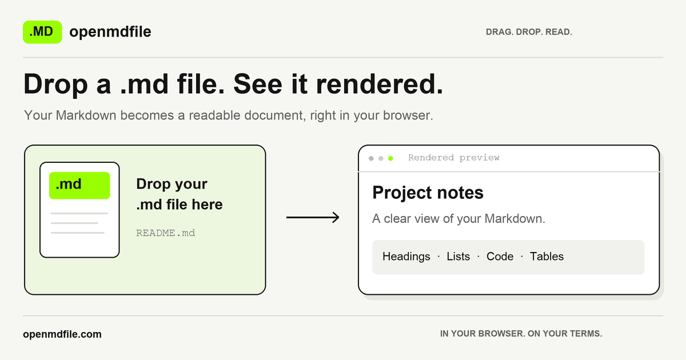

You received a .md file from ChatGPT, a README from GitHub, or notes from a teammate — and you do not want to upload it to a random “online converter.” Fair. For OS-by-OS steps, see how to open an MD file (also phrased as how to open a markdown file). This guide explains what “open Markdown online” usually implies, how to open the file entirely in your browser, how local tools compare to upload converters, what PDF/Word export actually does on openmdfile.com, and when a desktop editor is still the better choice.
What opening Markdown online usually means
Search for “open md file online” and you will find two very different products that look similar on the landing page:
- Upload converters — you send the file (or paste into a form that posts to a server). The service stores or processes the text on their machines, then returns a preview or a download. Convenient, but your document contents leave your device. That may be fine for a public README; it is a poor default for contracts, customer data, or internal docs.
- Browser-local viewers — the site ships JavaScript that runs in your tab. Choosing a file uses the browser File API; the bytes are read into memory on your device and rendered there. A well-built local viewer never needs your Markdown on its server to show a preview.
The marketing language overlaps (“free,” “online,” “no install”), so the honest question is not “is it a website?” but “does my file leave my computer?” If the answer is unclear in the privacy policy, assume upload until proven otherwise.
Open without uploading — browser-local steps
On openmdfile.com the flow is intentionally short:
- Open the homepage (or this page’s sibling tools such as MD Viewer / Markdown Reader).
- Drop a
.md,.markdown, or.txtfile into the drop zone, or click Choose file. You can also paste Markdown text or open a file from a URL you control. - The page renders GitHub Flavored Markdown (GFM) as a readable document: headings, tables, task lists, fenced code with highlighting, and common extras such as diagrams and math when those libraries are loaded.
- Read it. If you need a shareable artifact, use the on-page PDF or Word export — still generated in the browser (see below). Soft limit: files up to 10 MB.
Nothing in that path requires an account. After the page and its libraries have loaded from the CDN, preview does not depend on re-uploading your document. “Open from URL” is the one exception to “nothing leaves”: your browser fetches that URL directly (for example a raw GitHub file); the request goes to the host you typed, not as an upload of a local secret to us.

Local vs upload converters
| Aspect | Browser-local (e.g. openmdfile) | Typical upload converter |
|---|---|---|
| Where the .md is processed | Your browser tab (File API + JS) | Provider’s servers |
| Account required | No | Often optional, sometimes required for history |
| Works for sensitive drafts | Designed for that default | Only if you trust the operator and retention policy |
| Offline after first load | Preview can keep working for an already-loaded page | Usually needs connectivity to their API |
| Server-side copy of your text | Not created for preview/export | Often yes, at least transiently |
| Best for | Reading, quick PDF/Word, privacy-sensitive files | Heavy batch jobs, server-only formats, team pipelines |
Neither model is “always wrong.” Upload services can be excellent for automated pipelines. For “I just need to read this one file,” local rendering removes an unnecessary trust decision.
Export PDF / Word privacy — what is truly local
Preview on openmdfile is browser-local. Export deserves the same honesty:
- PDF — built with
html2pdf.js/ jsPDF in your tab, then downloaded as a file. Your Markdown is not posted to openmdfile servers to create the PDF. - Word — the page builds an HTML document styled for Microsoft Word and triggers a local
.docdownload (a Word-readable HTML package). Again, generation happens on-device; we do not receive the document to convert it. - Copy rich text — stays on your clipboard for pasting into Docs, Word, or email.
What does leave your machine in normal use of any modern static site:
- Requests for the page HTML and open-source libraries from public CDNs (those hosts see an IP and a URL path, not your file contents).
- An optional country hint from our edge
/geoendpoint so the UI can pick a likely language — not linked to your document. - If you use Open from URL, your browser contacts that remote host.
So: your .md contents are not uploaded for preview or for PDF/Word export. We do not claim zero network activity (that would be false for any site that loads scripts). We claim the document itself is not sent to us. If a future feature ever needed a server round-trip for export, it would have to be labeled clearly; today’s PDF/Word path does not.
Same privacy posture as other CCC Studio browser-local tools — for example the pdf-to-markdown family — where conversion stays on-device rather than treating your files as upload fodder.
When to use a desktop editor
A browser viewer is ideal for opening and reading. Prefer a desktop editor when you need:
- Long editing sessions with git integration, multi-file projects, or extensions (VS Code, Obsidian, Typora, and similar).
- Guaranteed offline-first workflows without depending on CDN availability for first load.
- Custom render pipelines (org-specific Markdown flavors, proprietary plugins, or CI that already builds docs).
- Very large files beyond the soft 10 MB browser limit, or binary-adjacent notebooks that are not plain Markdown.
For “double-clicked a .md and Windows/macOS shrugged,” the browser path is usually faster than installing an editor for a one-off read. For daily writing, install the editor.
Ready to try it? Open your file on the openmdfile homepage — drop, preview, optional PDF/Word. Need HTML for the web instead of a reading view? That is what sister tool mdtohtml.app is for (convert/publish Markdown as HTML), not a substitute for private local preview here.
你从 ChatGPT、GitHub README 或同事那里拿到一个 .md 文件——但不想把它上传到不知名的“在线转换器”。合理。本文说明“在线打开 Markdown”通常意味着什么、如何在浏览器本地打开、本地工具与上传型转换器的对比、openmdfile.com 上 PDF/Word 导出是否真本地，以及何时更该用桌面编辑器。
“在线打开 Markdown”通常是什么意思
搜索结果里常见两类产品，落地页看起来很像：
- 上传型转换器——文件（或表单内容）发到对方服务器处理，再返回预览或下载。公开 README 也许无妨；合同、客户数据、内部文档则默认不该这么做。
- 浏览器本地查看器——站点下发在你标签页里运行的 JavaScript，用 File API 读本地文件并在设备内存中渲染。设计正确的本地查看器预览时不需要把 Markdown 放到他们的服务器上。
营销词都是“免费、在线、免安装”，真正该问的是：文件有没有离开我的电脑？隐私政策说不清时，先按上传来假设。
不上传打开——浏览器本地步骤
在 openmdfile.com 流程很短：
- 打开首页（或 MD 查看器 / Markdown 阅读器）。
- 把
.md/.markdown/.txt拖进放置区，或点选择文件。也可粘贴文本，或从你可控的 URL 打开。 - 页面以 GitHub Flavored Markdown（GFM）渲染：标题、表格、任务列表、代码高亮，以及在库已加载时的图表与公式等。
- 阅读即可。需要分享物时再用页内 PDF 或 Word 导出（见下节）。软限制：最大约 10 MB。
全程无需账号。页面与库从 CDN 加载后，预览不依赖再次上传文档。“从链接打开”是唯一例外：浏览器会直接请求你填写的地址（如 GitHub raw），那是对远端主机的访问，不是把本地机密上传给我们。
本地 vs 上传型转换器
| 维度 | 浏览器本地（如 openmdfile） | 典型上传转换器 |
|---|---|---|
| 处理位置 | 你的浏览器标签页 | 服务商服务器 |
| 是否要账号 | 否 | 常可选，历史记录有时要登录 |
| 敏感草稿 | 默认适合 | 仅当你信任对方与留存策略 |
| 首次加载后离线 | 已加载页面上预览常仍可用 | 通常要连他们的 API |
| 服务端是否有你的正文副本 | 预览/导出不会创建 | 往往至少短暂存在 |
| 更适合 | 阅读、快速 PDF/Word、隐私敏感文件 | 批量任务、仅服务端格式、团队流水线 |
导出 PDF / Word 的隐私——是否真本地
预览是浏览器本地的。导出同样要说清楚：
- PDF——用页内
html2pdf.js/ jsPDF 生成后本地下载，不会把 Markdown 发到 openmdfile 服务器去“帮你转 PDF”。 - Word——在本地生成适合 Word 打开的 HTML 并下载为
.doc，转换不经我们的服务器。 - 复制富文本——只在你的剪贴板里。
正常使用任何静态站点时，仍会有：CDN 脚本请求（对方看到 IP 与路径，不是你的正文）、可选的 /geo 国家提示用于语言、以及“从 URL 打开”时对远端主机的请求。文件正文不会因预览或 PDF/Word 导出而被上传。我们不宣称零网络活动；我们宣称文档本身不会发给我们。
这与 CCC Studio 其他浏览器本地工具（例如 pdf-to-markdown 系列）的隐私取向一致：转换留在设备上，而不是把文件当上传原料。
何时使用桌面编辑器
- 需要长时间编辑、Git、多文件项目或插件（VS Code、Obsidian、Typora 等）。
- 必须离线优先、不能依赖首次 CDN 加载。
- 组织自有 Markdown 方言或 CI 文档流水线。
- 超过约 10 MB 软限制，或根本不是纯 Markdown 的文件。
只是“双击打不开、看一眼就走”——浏览器路径通常比为此装一个编辑器更快。日常写作请装桌面工具。
现在就试？在 openmdfile 首页打开文件。若需要把 Markdown 转成网页 HTML，请用姊妹工具 mdtohtml.app（转换/发布 HTML），它不能替代这里的本地私密预览。
وصلك ملف .md من ChatGPT أو README أو زميل — ولا تريد رفعه إلى «محوّل عبر الإنترنت» عشوائي. هذا الدليل يوضّح ماذا يعني فتح ماركداون عبر الويب عادةً، وكيف تفتحه محليًا في المتصفح، والفرق عن خدمات الرفع، وما إذا كان تصدير PDF/Word على openmdfile محليًا حقًا، ومتى يبقى المحرر المكتبي أفضل.
ماذا يعني فتح ماركداون عبر الإنترنت عادةً
- محوّلات بالرفع — يُرسل الملف إلى خوادمهم ثم يعود معاينة أو تنزيل. مناسب أحيانًا لملف عام؛ سيئ كافتراضي للمستندات الحساسة.
- عارضات محلية في المتصفح — جافاسكربت في تبويبك يقرأ الملف بـ File API ويعرضه على جهازك دون الحاجة لرفع المحتوى لمعاينة سليمة.
السؤال الصادق: هل يغادر الملف جهازك؟ إن غمضت سياسة الخصوصية، افترض الرفع.
الفتح بلا رفع — خطوات محلية
- افتح الصفحة الرئيسية.
- أفلت
.md/.markdown/.txtأو اختر ملفًا (أو الصق نصًا / افتح من رابط تتحكم به). - يُعرض GFM كمستند قابل للقراءة.
- اقرأ؛ وعند الحاجة صدّر PDF أو Word من المتصفح. الحد المرن: نحو 10 ميغابايت.
«فتح من رابط» يستثني: متصفحك يطلب ذلك المضيف مباشرة — وليس رفع ملفك المحلي إلينا.
محلي مقابل محوّلات الرفع
| الجانب | محلي في المتصفح | محوّل رفع نموذجي |
|---|---|---|
| أين تُعالج | تبويبك | خوادمهم |
| حساب | لا | أحيانًا |
| مسودات حسّاسة | مصمّم لذلك | فقط إن وثقت بالمشغّل |
| نسخة على الخادم | لا للمعاينة/التصدير | غالبًا نعم مؤقتًا |
خصوصية تصدير PDF / Word
PDF عبر html2pdf/jsPDF محليًا. Word كحزمة HTML قابلة للتنزيل محليًا. المحتوى لا يُرفع إلينا للتحويل. ما يحدث على الشبكة: سكربتات CDN، تلميح دولة اختياري عبر /geo، وطلبات «فتح من رابط». لا ندّعي انعدام أي شبكة؛ ندّعي أن نص مستندك لا يُرسل إلينا.
نفس توجه خصوصية أدوات CCC Studio المحلية في المتصفح — ومنها عائلة pdf-to-markdown.
متى تستخدم محررًا مكتبيًا
للتحرير الطويل وGit والمشاريع متعددة الملفات والعمل دون اتصال من اللحظة الأولى، أو الملفات أكبر من ~10 ميغابايت. للقراءة السريعة لملف واحد، المتصفح يكفي.
جرّب الآن: الصفحة الرئيسية. لتحويل ماركداون إلى HTML للويب استخدم mdtohtml.app — أداة شقيقة مختلفة الغرض.
ChatGPT, GitHub README या सहकर्मी से .md मिली — और आप इसे किसी अनजान “ऑनलाइन कन्वर्टर” पर अपलोड नहीं करना चाहते। यह गाइड बताती है कि “ऑनलाइन Markdown खोलना” आमतौर पर क्या होता है, ब्राउज़र में लोकल कैसे खोलें, अपलोड कन्वर्टर से अंतर, openmdfile पर PDF/Word क्या सच में लोकल है, और डेस्कटॉप एडिटर कब बेहतर है।
“ऑनलाइन Markdown खोलना” आमतौर पर क्या मतलब रखता है
- अपलोड कन्वर्टर — फ़ाइल उनके सर्वर पर जाती है, फिर प्रीव्यू/डाउनलोड मिलता है। सार्वजनिक README के लिए ठीक; संवेदनशील दस्तावेज़ों के लिए डिफ़ॉल्ट खराब।
- ब्राउज़र-लोकल व्यूअर — आपके टैब में JS File API से फ़ाइल पढ़कर डिवाइस पर रेंडर करता है; सही डिज़ाइन में प्रीव्यू के लिए सर्वर पर Markdown भेजना ज़रूरी नहीं।
ईमानदार सवाल: क्या फ़ाइल आपका कंप्यूटर छोड़ती है? नीति अस्पष्ट हो तो अपलोड मानें।
अपलोड के बिना खोलें — ब्राउज़र-लोकल कदम
- होमपेज खोलें।
.md/.markdown/.txtड्रॉप करें या फ़ाइल चुनें (टेक्स्ट पेस्ट / नियंत्रित URL भी)।- GFM के रूप में पढ़ने योग्य दस्तावेज़ रेंडर होता है।
- पढ़ें; ज़रूरत हो तो ब्राउज़र में PDF या Word। नरम सीमा: लगभग 10 MB।
“URL से खोलें” अपवाद है: ब्राउज़र उस होस्ट से सीधे फ़ेच करता है — आपकी लोकल फ़ाइल हमें अपलोड नहीं होती।
लोकल बनाम अपलोड कन्वर्टर
| पहलू | ब्राउज़र-लोकल | अपलोड कन्वर्टर |
|---|---|---|
| प्रोसेसिंग | आपका टैब | उनके सर्वर |
| अकाउंट | नहीं | कभी-कभी |
| संवेदनशील ड्राफ़्ट | इसी के लिए | केवल विश्वास हो तो |
| सर्वर पर कॉपी | प्रीव्यू/एक्सपोर्ट के लिए नहीं | अक्सर अस्थायी हाँ |
PDF / Word एक्सपोर्ट की गोपनीयता
PDF html2pdf/jsPDF से लोकल। Word लोकल HTML-.doc डाउनलोड। कन्वर्ज़न के लिए हमें सामग्री नहीं भेजी जाती। नेटवर्क पर: CDN स्क्रिप्ट, वैकल्पिक /geo, और URL-खोलने पर रिमोट होस्ट। हम शून्य नेटवर्क का दावा नहीं करते; हम दावा करते हैं कि आपका दस्तावेज़ टेक्स्ट हमें नहीं जाता।
CCC Studio के अन्य ब्राउज़र-लोकल टूल (जैसे pdf-to-markdown परिवार) जैसी ही गोपनीयता मुद्रा।
डेस्कटॉप एडिटर कब उपयोग करें
लंबा संपादन, Git, मल्टी-फ़ाइल, पूरी तरह ऑफ़लाइन-पहले, या ~10 MB से बड़ी फ़ाइलें। एक बार पढ़ने के लिए ब्राउज़र तेज़ है।
अभी आज़माएँ: होमपेज। वेब HTML चाहिए तो बहन टूल mdtohtml.app — यहाँ की लोकल प्राइवेट प्रीव्यू का विकल्प नहीं।